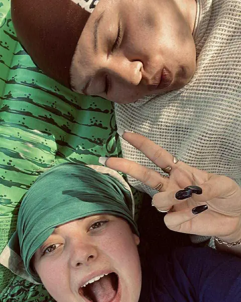
Mouvement de jeunesse · Nandrin
Bienvenue sur le site officiel du Patro de Nandrin !
Ici, vous trouverez toutes les informations utiles concernant le staff du P4H, mais aussi son actualité, le calendrier pour ne manquer aucun patro et enfin, un lien vers nos réseaux.
— L'équipe du Patro de Nandrin.
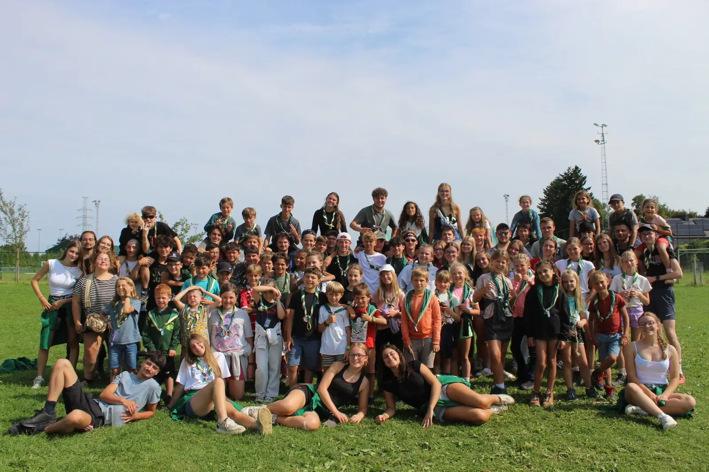
La présidence
Vos interlocuteurs pour toute question
Informations
Un samedi après-midi au Patro
Le Patro de Nandrin est un mouvement de jeunesse rassemblant des jeunes de 6 à +20 ans pendant un samedi après-midi.
Des activités différentes et adaptées sont prévues pour que vos enfants s'amusent au maximum avec des animateurs motivés et créatifs.
Les samedis de 14h30 à 17h.
Sauf le premier samedi du mois, lors des vacances, des examens, et des activités spéciales.
À côté de l'église de Nandrin : Rue du Presbytère n° 7, 4550 Nandrin.
Pour le début et la fin des rassemblements, sauf lors de certaines activités spéciales (locaux indisponibles, interpatro, etc.).
Itinéraire dans Google Maps ↗30 € / an
La cotisation annuelle est de 30 € pour le premier enfant.
BE28 7326 1623 7920Communication : « NOM(s) et PRÉNOM(s) de(s) l'enfant(s) + Cotisation »
L'inscription comprend l'assurance patro, la plupart des activités spéciales et les goûters pour l'année.
À partir de 6 ans. Les enfants sont séparés en 7 sections :
- Les Benjamins6 – 9 ans
- Les Benjamines6 – 9 ans
- Les Chevaliers9 – 12 ans
- Les Étincelles9 – 12 ans
- Les Conquérants12 – 16 ans
- Les Alpines12 – 16 ans
- Les Grands Grandes16 – 18 ans · mixte
Les sections sont parfois mélangées pour des activités spéciales.
Si vous avez plus de 16 ans, vous pouvez venir discuter avec les animateurs pour éventuellement rejoindre l'aventure Patro en tant qu'animateur vous aussi !
Voir les animateurs de chaque section →5 €
Disponible aux locaux du Patro.
Camp ?
Le Patro de Nandrin part en camp du 1 au 10 août.
Tout sur le camp →Calendrier
Calendrier Patro 2026
De septembre à décembre. Les samedis de 14h30 à 17h, rue du Presbytère 7, sauf indication contraire.
Septembre2 patros
- sam.05/09Pas patro
- w-e11-13/09Pas patroEvent Nandrin festivités
- sam.19/09Rentrée Patro
- sam.26/09Patro
Octobre4 patros
- sam.03/10Pas patro
- sam.10/10Patro
- sam.17/10Patro
- sam.24/10Patro
- sam.31/10PatroBalade Halloween avec la MDJ ?
Novembre3 patros
- sam.07/11Pas patro
- sam.14/11Patro
- sam.21/11PatroPuis souper Dia
- sam.28/11Patro
Décembre2 patros
- sam.05/12PatroExceptionnellement
- sam.12/12PatroDernier patro de 2026
- sam.19/12Pas patro
- sam.26/12Pas patro
PatroPatro avec activité spécialePas de patro
Documents
Tous les documents utiles
Vous trouverez ici tous les documents qui pourraient vous être utiles, avec une possibilité pour vous de les télécharger.
FORM
Fiche d'inscription pour une année Patro
Pour s'inscrire, il suffit de remplir le formulaire Google ci-dessous.
- Vous pouvez bien sûr venir essayer le patro gratuitement pendant 2-3 samedis avant de vous inscrire.
- Le virement relatif aux assurances confirmera l'inscription de votre (vos) enfant(s).
- Si vous avez la moindre question : nous sommes à votre disposition avant les rassemblements.
PDF
PowerPoint présentation du camp
Camp Patro 2K23 · PDF · 14,8 Mo
PDF
Liste de choses à prendre pour le camp
Bagages à prendre pour partir en camp · PDF · 289 Ko
PDF
Fiche santé
PDF · 152 Ko
CAL
Calendrier
Calendrier Patro 2026, consultable directement sur le site.
Contact / Staff
Liste des animateurs/trices par section
Choisissez une section pour voir son équipe. Le bouton « Contacter » de chaque animateur vous met directement en relation avec le Patro.
Benjamines
6 – 9 ans · 2 animateur·rice·s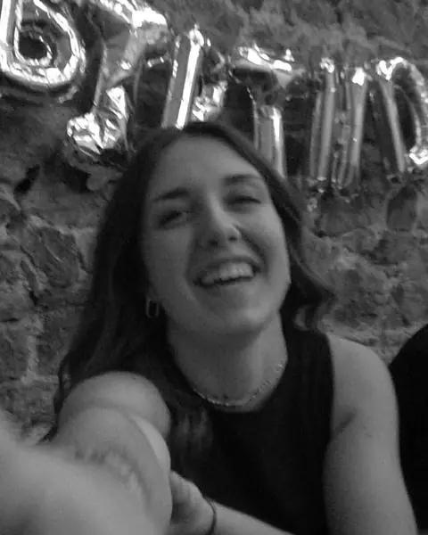
Eléa Vanherle
2ème année d'animatriceLilas Dethier
1ère année d'animatriceBenjamins
6 – 9 ans · 3 animateur·rice·s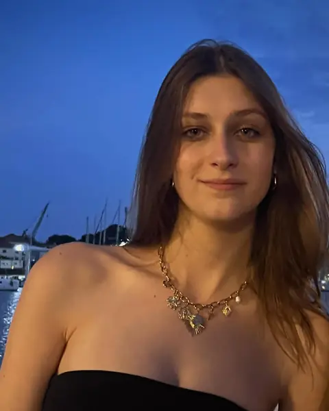
Elisa Tarabella
3ème année d'animatrice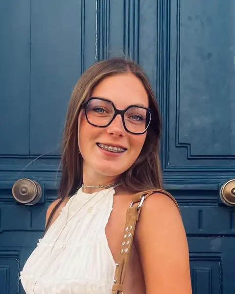
Lola Moes
1ère année d'animatrice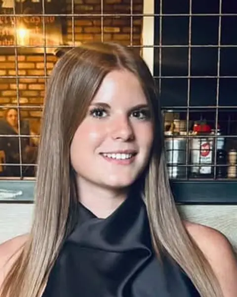
Louise Fauconnier
1ère année d'animatriceÉtincelles
9 – 12 ans · 3 animateur·rice·s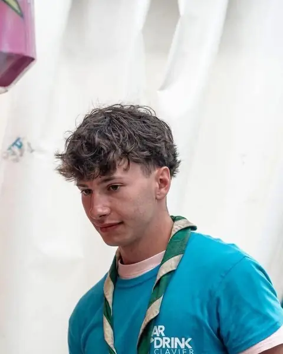
Xavier
5ème année d'animateurTrésorier
Mathurin Heselmans
3ème année d'animateurLilou Pironet
3ème année d'animatriceChevaliers
9 – 12 ans · 3 animateur·rice·sVice-Président
Matthieu Leblanc
2ème année d'animateurMaëlle Martin
2ème année d'animatrice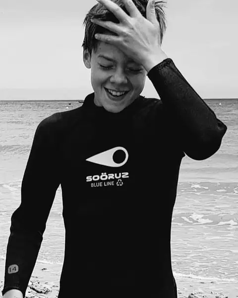
Romain Pozzi
1ère année d'animateurAlpines
12 – 16 ans · 2 animateur·rice·sPrésidente
Amandine Deflandre
3ème année d'animatrice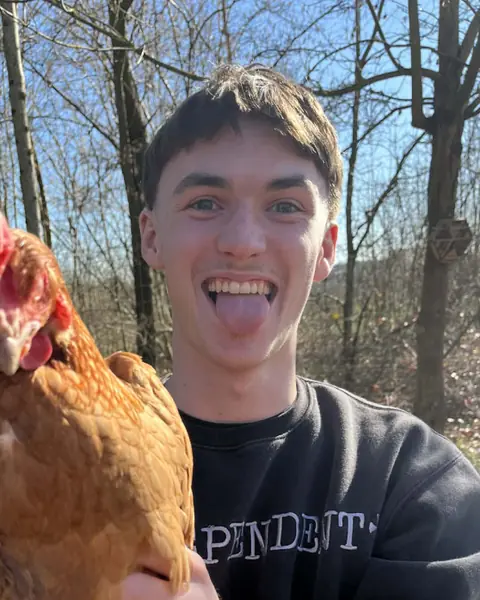
Timothé Jamar
3ème année d'animateurConquérants
12 – 16 ans · 3 animateur·rice·s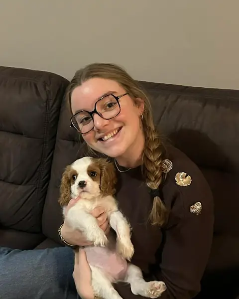
Mara De Smedt
3ème année d'animatrice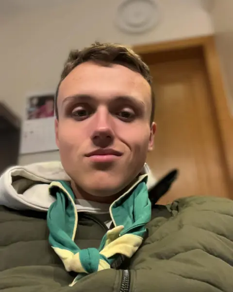
Paul Comté
2ème année d'animateur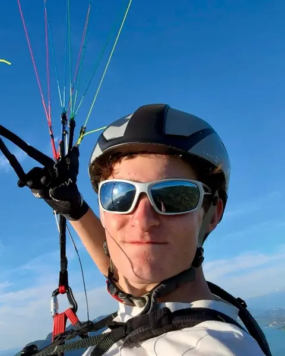
Louis Feyen
3ème année d'animateurGrands Grandes
16 – 18 ans · mixte · 3 animateur·rice·sLoric Frankinet
4ème année d'animateurGiulia Bonnemayers
3ème année d'animatrice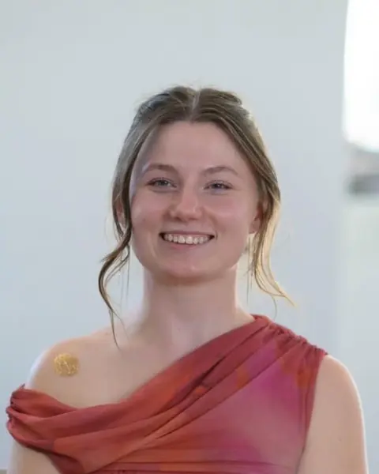
Gwenaelle
1ère année d'animatrice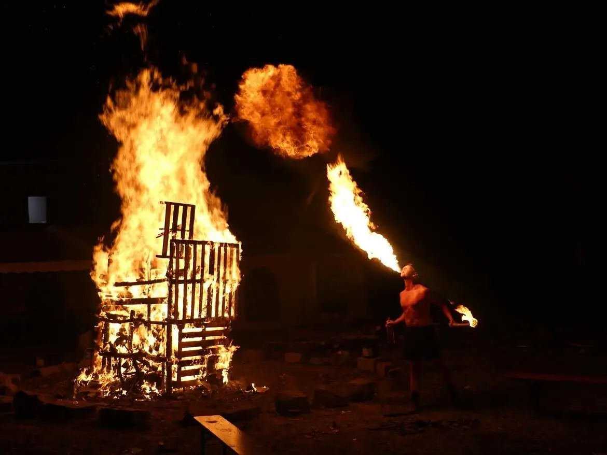
Photos
Les photos sont sur notre groupe Facebook privé
Par respect de la vie privée de nos animé(e)s, les photos et vidéos prises lors des après-midis ou du camp ne seront pas postées sur ce site mais bien sur le groupe Facebook privé du Patro de Nandrin, disponible en cliquant sur le bouton ci-dessous.
Groupe Facebook du PatroCamp
Dix jours qui font toute l'année
Cet été, le Patro de Nandrin partira en camp ! Pour beaucoup, c'est le moment le plus attendu de l'année : vivre en pleine nature, créer des liens forts, jouer, apprendre, grandir… Une expérience unique qui les marque pour la vie.
Le camp est la finalité de l'année patro. C'est un moment intense de plaisir et de joie, et nous encourageons tous les patronnés à y participer ! Au plaisir de vous y voir !
Date ?Toujours du 1er au 10 août
Prix ?170 € par enfantPrix de cette année, il peut varier. Des aides existent et sont à disposition : contactez-nous pour en savoir plus.Demander une aide
Questions et contacts
Une question ? Contactez-nous.
Si d'autres questions persistent encore, alors n'hésitez plus : appelez, envoyez un WhatsApp ou utilisez le formulaire. Nous sommes aussi à votre disposition avant les rassemblements.
Appeler la PrésidenteAmandine Deflandre · +32 478 05 57 89→
Écrire sur WhatsAppRéponse directe sur votre téléphone→
Envoyer un e-mailamandinedeflandre777@outlook.be→
Appeler le Vice-PrésidentMatthieu Leblanc · +32 456 16 46 03→
Voici nos réseaux pour ne jamais rien manquer 😉
Patro de Nandrin · Rue du Presbytère 7, 4550 Nandrin — à côté de l'église · Itinéraire ↗